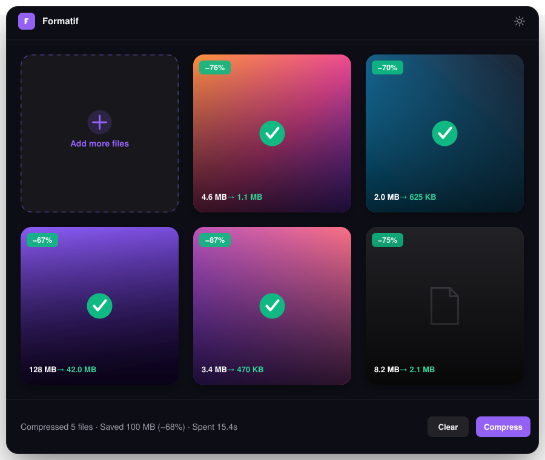

Compress images, video, GIFs
and PDFs — 100% local.
No uploads, no account, no subscription. Batch-compress your files in seconds, right on your own machine — free and open source.
Latest version — · view source on GitHub

Built for privacy and speed
Everything you need to shrink files, nothing you don't.
Free & open source
MIT licensed. No license key, no paywall, no telemetry — the source is right there on GitHub.
Private by design
Every file is processed locally with bundled ffmpeg, qpdf and gifsicle. Nothing ever leaves your machine.
Batch & fast
Drop single files or whole folders and compress everything in parallel. Watch folders for hands-free automation.
Whatever you need to shrink
Each category gets its own quality, resolution and format controls.
Image
JPEG, PNG, WebP, AVIF, ICO. Also decodes HEIC, PSD, SVG, TIFF, BMP and JPEG-2000 on the way in.
Video
MP4, WebM, MOV, MKV, AVI, WMV, FLV, M4V, 3GP — or extract the audio to MP3, AAC, WAV, FLAC.
GIF
Re-encode to MP4, WebM or WebP, or keep it a GIF and let gifsicle's lossy compression do the work.
Lossless structural recompression with qpdf, plus optional image downsampling for image-heavy PDFs.
Three steps, zero uploads
No wizards, no cloud round-trip — just drop and go.
Drop your files
Drag in files or entire folders. Formatif sorts them into images, video, GIFs and PDFs automatically.
Pick quality & format
Use the built-in preset or dial in your own quality, resolution and output format per category — or per file.
Get compressed output
ffmpeg, qpdf and gifsicle do the work locally. Compare before/after and see exactly what you saved.
Free and open source, actually
Formatif isn't a free trial of a paid app. It's MIT-licensed, the full source is on GitHub, and it always will be.
- No subscription, no license key, ever
- Zero telemetry — nothing phones home
- Inspect or fork every line of the source
- Issues and PRs welcome on GitHub
Good to know
Is Formatif really free?
Yes. Formatif is MIT-licensed and free forever — no paywall, no license key, no in-app upsells.
Does my data ever leave my computer?
No. Every compression job runs locally through the bundled ffmpeg, qpdf and gifsicle binaries. Nothing is uploaded, and Formatif doesn't collect telemetry.
Why does macOS say Formatif is "from an unidentified developer"?
The macOS build isn't code-signed yet (no Apple Developer certificate), so Gatekeeper quarantines it after download. Right-click the app → Open → confirm, or run xattr -rd com.apple.quarantine /Applications/Formatif.app once in Terminal. Notarization is on the roadmap.
What's actually inside the installer?
ffmpeg, qpdf and gifsicle, bundled as separate executables — nothing downloads on first run. ffmpeg and gifsicle are GPL-licensed, qpdf is Apache-2.0; Formatif's own code stays MIT.
Which platforms are supported?
Windows 10/11 and macOS on Apple Silicon today. Intel Mac support and a signed/notarized macOS build are on the roadmap.
Can I contribute or report a bug?
Please do — Formatif is open source. File issues or pull requests on GitHub.
Ready to shrink your files?
Download Formatif and compress your first batch in under a minute.